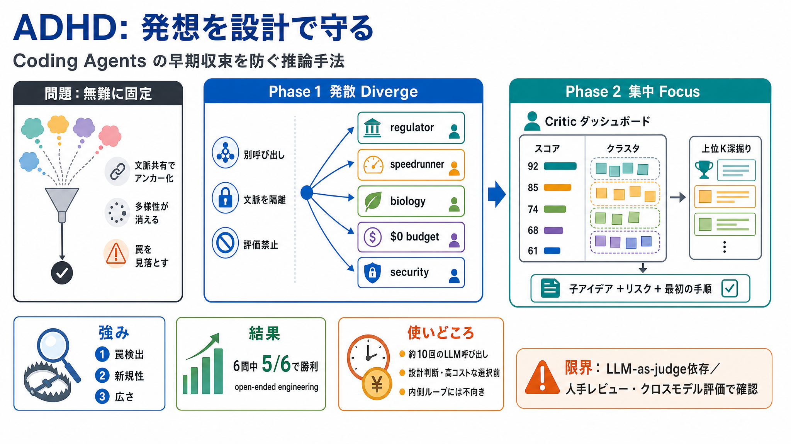

ADHD: Parallel Divergent Ideation for Coding Agents
# ADHD: Parallel Divergent Ideation for Coding Agents Tree-of-thought with cognitive-frame branching, generator–critic s…

発想を設計で守る
LLMベースのコーディング・エージェントが「発想」で早期に同じ型へ収束する問題を抑える推論手法です。
“無難”に固定される
「Xのやり方をいくつか」と頼むと、確率が高い“それっぽい候補”に先にアンカーされ、その後も延長線で磨くだけになりがちです。
地図作り→採掘
“探し当てる”より先に、“見落としにくい地図（角度の塊）”を作る発想の手順を固定します。
二段階の責務分離
ADHDは2フェーズで、発散段階では機械的に評価を禁止し、収束（選別）は後段の critic のみに任せます。
Diverge: 隔離して発散
同じ問題に対し、各フレームごとにLLMへ“新規呼び出し”し、分岐同士は文脈共有しません（regulator / speedrunner / biology / $0 budget 等）。
Focus: 罠と多様性を見抜く
全アイデアをcriticがスコアリングし、クラスタ（角度の塊）を抽出して、上位K案をリスクと最初の具体手順まで生成します。
ToT/CoTと何が違う
CoT/ToTは同一トレース内で生成と探索が混ざりやすく、アンカーが残り得ます。一方ADHDは、generatorとcriticを呼び出しで分離し評価を発散から排除します。
実験結果（6問）
6つのオープンエンドなエンジニアリング問題で、同一モデルの強い単発ベースラインと比較し、ADHDが5/6で勝利したと報告されています。
“それっぽい”を排除
改善が大きい順に、罠検出→新規性→広さ。これにより「見栄えは良いが失敗しやすい案」を早期に退けやすくします。
コストを意思決定へ投資
単発より多い呼び出し（概ね約10回）を要し、実時間で30〜90秒程度になり得るため、内側ループの頻回反復には不向きです。
限界と運用の勘所
評価（LLM-as-judge）が同一モデル系列に依存するため、表層の好みに有利不利が出る可能性があります。さらに、深掘り出力がactionabilityを作っている可能性もあり、切り分けが難しいとされています。
導入チェック
費用対効果（10回呼び出し）を踏まえつつ、内側ループではなく“発想→選別”の意思決定前に使うのが適合しやすい、と整理できます。
# ADHD: Parallel Divergent Ideation for Coding Agents Tree-of-thought with cognitive-frame branching, generator–critic s…
# GitHub - UditAkhourii/adhd: ADHD — a skill for coding agents. * GitHub Copilot Write better code with AI. * GitHub…
That's the whole base of my paper - ADHD - Parallel Divergent Ideation for Coding Agents. My thesis is that if we disreg…
In this paper, we report an empirical study on the generalizability of four state-of-the-art multi-agent code generation…
In a process-orchestrated agent system, the LLM becomes a sophisticated node within a larger, choreographed workflow. Th…